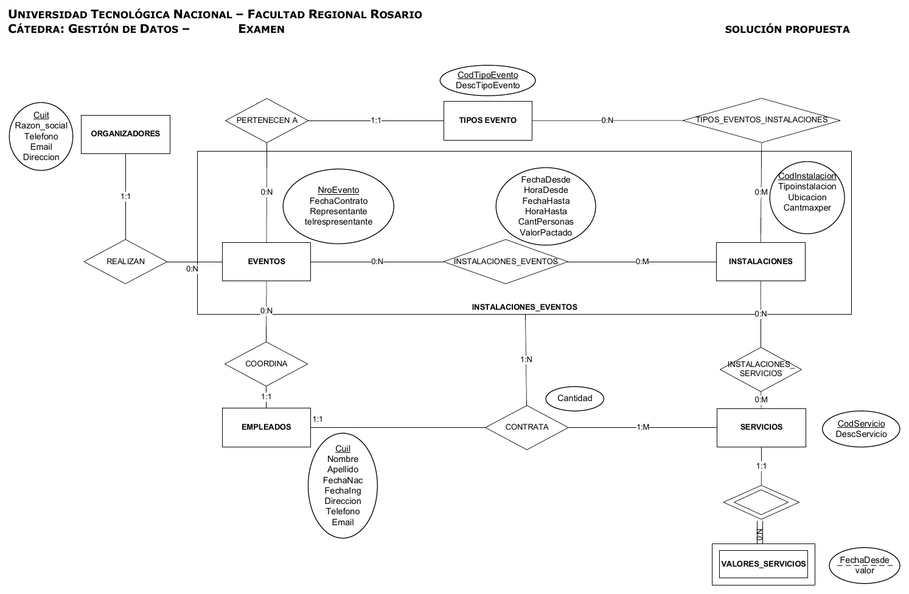
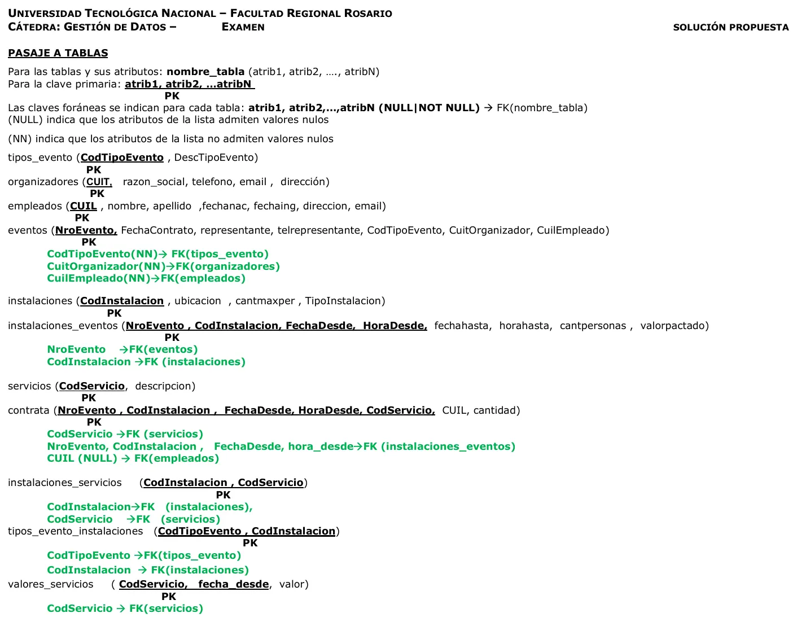

Club Social y Deportivo VA
Final
Enunciado
Evaluación del Modelo de Datos y Algebra Relacional
Modelos de Datos
- a) Esquematice el modelo E-R que se deriva de la narrativa.
- b) Transforme el modelo E-R en un Esquema relacional (pasaje a tablas), indicando los atributos de cada tabla que se derivan de la narrativa o aquellos que cree que debieran contener como mínimo las mismas, indique las claves primarias y foráneas.
Operaciones del Álgebra Relacional
- c) Desarrolle las operaciones en Algebra relacional de los Requerimientos planteados.
El Club Social y Deportivo VA nos ha requerido el desarrollo de un sistema de gestión para el alquiler de sus instalaciones1. Para cada instalación el Club define los tipos de evento2 que pueden realizarse y ofrece una serie de servicios3.
Cuando un Organizador4 se presenta ante el Club para alquilar las instalaciones, informa el tipo de evento (recital, fiesta, torneo, reunión, etc.) que realizará y fechas desde y hasta y hora desde y hasta en que desea realizarlo. La persona que lo atiende le entrega un informe con las instalaciones disponibles para el tipo de evento en las fechas requeridas, indicando además la capacidad máxima de personas que admite cada instalación y los servicios que se ofrecen para cada una de ellas.
En función de este informe el Organizador decide la realización del Evento y firma un contrato para el Evento5 con el Club.
A partir de la firma del contrato, el organizador puede solicitar los servicios que se incluirán en el contrato7.
Reglas de Negocio
- De las instalaciones se registra su código, tipo de instalación (salón, carpa, pileta, estadio, cancha de paddle, cancha de fútbol, etc.), ubicación, los tipos de evento2 que pueden realizarse y la cantidad máxima de personas admitidas.
- Los tipos de eventos (recital, fiesta, torneo, reunión, etc.) están codificados y tienen una descripción.
- De los Servicios se conoce su código y descripción. Un mismo servicio puede brindarse en más de una instalación. Los precios de los servicios varían con el tiempo y se requiere mantener un histórico de los mismos.
- Los Organizadores de eventos deben registrarse indicando CUIT, razón social, teléfono, email y dirección.
- Los Eventos contratados se numeran correlativamente y se conoce fecha de contrato, Organizador, tipo de evento, nombre del representante que firma el contrato, teléfono del representante e instalaciones contratadas. Para cada instalación contratada para el Evento se indica la fecha desde, hora desde, fecha hasta y hora hasta que se utilizará, la cantidad de personas que asistirán y el valor pactado por el alquiler. Llegada la fecha del Evento, el Club designará un responsable de entre sus empleados6 que se encargará de coordinar que el Evento se realice según las pautas preestablecidas (que las instalaciones estén en condiciones y los servicios contratados estén disponibles cuando se los requiera). En ese momento se registra el empleado asociado al Evento.
- De los empleados del club se conoce, CUIL, nombre y apellido, fecha de nacimiento, fecha de ingreso, teléfono, email y dirección.
- Para cada evento e instalación del mismo, se pueden contratar servicios. Para su registro se requiere además indicar el empleado responsable y la cantidad del servicio contratada.
Requerimientos
A la empresa le interesa conocer (AR)
- Los tipos de evento que se han definido pero nunca se realizaron eventos.
- Los eventos que fueron contratos por el organizador “Reuniones Improvisadas” durante el año pasado.
Evaluación de Bases de Datos Relacionales
Todas las operaciones que realice deben copiarse a un archivo que será entregado una vez completado el examen. El nombre del archivo deberá tener la forma: APELLIDO_NOMBRE.sql
DDL
- (Esta consigna es eliminatoria). Desarrolle las sentencias DDL requeridas para completar la definición de la tabla CONTRATA Copie el DDL que se obtiene con la herramienta al archivo a entregar.
DML
- Indicar por empleado la cantidad de eventos que tuvo como coordinador. Mostrar CUIL, apellido, nombres y cantidad de eventos. Aquellos empleados que no fueron coordinadores en ningún evento indicar 0.
- Ranking de servicios contratados indicando: datos del servicio, suma de la cantidad del servicio contratado para todos los eventos y porcentaje de esta suma sobre la suma total de las cantidades de servicios contratados. Los servicios que no hayan sido contratados deberán figurar en la lista con cantidad total 0. Ordenar el ranking en forma descendente por porcentaje.
- Calcular el total a pagar del Evento 5. El total debe incluir: la suma de los valores pactados por las instalaciones más la suma de los totales de servicios contratados. NOTA: el total de un servicio se calcula como la cantidad del servicio contratada por el valor del servicio a la fecha del contrato del evento.
- STORE PROCEDURE (SP): Desarrollar un SP que dada una nueva descripción de un tipo de evento lo registre en la tabla correspondiente manteniendo la correlatividad de los códigos de tipos de evento
TCL
- Registrar los nuevos valores de servicios para la fecha de hoy en función de su valor anterior más un 20%.
Resolución
Ver la resolución: DER, pasaje a tablas y SQL
Son las hojas originales. Tocá una para verla en grande.




SQL
/*
VA alquileres
*/
/* SQL 2 */
select em.cuil, em.nombre,em.apellido, COUNT(ev.cuilempleado)
from empleados em
LEFT join eventos ev
on ev.cuilempleado = em.cuil
group by 1,2,3;
/* FIN SQL 2 */
/* SQL 3 */
select SUM(contrata.cantidad) into @cant_total
from contrata;
select ser.CodServicio, ser.DescServicio, sum(c.cantidad) cantidad, sum(c.cantidad) * 100 / @cant_total 'Porcentaje Total'
from servicios ser
inner join contrata c
on c.CodServicio = ser.CodServicio
group by 1,2
order by 3 desc;
/* FIN SQL 3 */
/* SQL 4 */
/* USANDO VARIABLES Y SUBCONSULTA */
select SUM(ie.valorpactado) INTO @vinstala
FROM instalaciones_eventos ie
WHERE ie.NroEvento = 5;
select ev.fechacontrato into @vfechacontrato
FROM eventos ev
WHERE ev.NroEvento = 5;
select SUM(c.cantidad * vs.valor) INTO @vservicios
from contrata c
INNER JOIN valores_servicios vs
ON vs.CodServicio = c.CodServicio
AND vs.fechadesde = (SELECT MAX(vsf.fechadesde)
FROM valores_servicios vsf
WHERE vsf.CodServicio = vs.CodServicio
AND vsf.fechadesde <= @vfechacontrato)
WHERE c.NroEvento = 5;
SELECT @vinstala + @vservicios;
/* FIN SQL 4 */
/* USAR PARA BORRAR LOS REGISTROS GENERADOS POR LAS DUDAS SI SE HIZO COMMIT*/
DELETE FROM valores_servicios
WHERE FechaDesde = current_date();
/* FIN SQL 4 */
/* SQL 5 */
DROP procedure IF EXISTS NuevoTipoEvento;
DELIMITER $$
USE `va_alquileres`$$
CREATE PROCEDURE NuevoTipoEvento (in Descripcion varchar(20))
BEGIN
select max(te.CodTipoEvento) into @codigo
from tipos_evento te;
insert into tipos_evento(CodTipoEvento, DescTipoEvento) values (@codigo+1, descripcion);
END$$
DELIMITER ;
call NuevoTipoEvento('Fiesta electronica');
/* FIN SQL 5 */
/* SQL 6 */
start transaction;
drop temporary table if exists tt_valfecha;
create temporary table tt_valfecha
select vs.CodServicio, max(vs.fechadesde) FechaDesde
FROM valores_servicios vs
where vs.fechadesde <= current_date()
group by 1;
INSERT INTO valores_servicios
SELECT tt.CodServicio, current_date(), vs.valor * 1.20
FROM tt_valfecha tt
INNER JOIN valores_servicios vs
ON vs.CodServicio = tt.CodServicio
AND vs.fechadesde = tt.FechaDesde;
COMMIT;
/* FIN SQL 6 */¿Cómo te fue?
Marcá cada tema del examen.
- DERDe la narrativa al DER, en 1° parcial
- PasajePasaje a tablas, en 1° parcial
- ÁlgebraÁlgebra relacional, en 1° parcial
- SQLSQL para la práctica, en 2° parcial